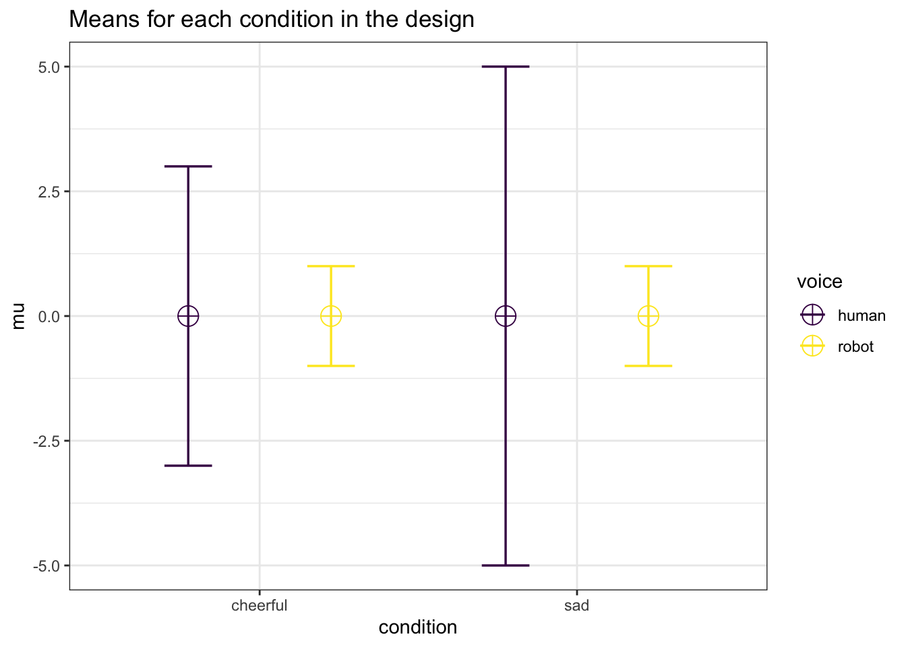

Chapter 12 Violations of Assumptions
So far we have shown how simulations can be useful for power analyses for ANOVA designs where all assumptions of the statistical tests are met. An ANOVA is quite robust against violations of the normality assumption, which means the Type 1 error rate remains close to the alpha level specified in the test. Violations of the homogeneity of variances assumption can be more impactful, especially when sample sizes are unequal between conditions. When the equal variances assumption is violated for a one-way ANOVA, Welch’s F-test is a good default.
When the sphericity assumption in within designs is violated (when the variances of the differences between all pairs are not equal) a sphericity correction can be applied (e.g., the Greenhouse-Geisser or Huynh-Feldt correction) or a Multivariate ANOVA (MANOVA) can be performed. Alternative approaches for ANOVA designs with multiple between factors exist, such as heteroskedasticity robust standard errors. Superpower allows researchers to perform power analyses for unequal variances (or correlations) applying sphercity corrections, or a MANOVA. We aim to include the option to perform Welch’s F-test in the future.
12.1 Violation of Heterogeneity Assumption
Although some recommendations have been provided to assist researchers to choose an approach to deal with violations of the homogeneity assumption (Algina and Keselman 1997), it is often unclear if these violations of the homogeneity assumption are consequential for a given study. So far we have used simulations in Superpower to simulate patterns of means where there is a true effect, but we can also simulate a null effect. Such Monte Carlo simulation studies are used in published articles to examine the Type 1 error rate under a range of assumptions and while performing different tests. Superpower makes it easy to perform such simulations studies for the specific scenario a researcher is faced with, and can help to make a decision whether violations of assumptions are something to worry about, and whether choices to deal with violations are sufficient.
design_result_violation <- ANOVA_design(
design = "2b*2b",
n = c(20, 80, 40, 80),
mu = c(0, 0, 0, 0),
sd = c(3, 1, 5, 1),
labelnames = c("condition", "cheerful", "sad", "voice", "human", "robot"))
# power_result_violation <- ANOVA_power(
# design_result_violation,
# nsims = 10000,
# verbose = TRUE)
design_result_violation_2 <- ANOVA_design(
design = "2b*2b",
n = c(80, 80, 80, 80),
mu = c(0, 0, 0, 0),
sd = c(3, 1, 5, 1),
labelnames = c("condition", "cheerful", "sad", "voice", "human", "robot"))
# power_result_violation_2 <- ANOVA_power_unequal_n(
# design_result_violation_2,
# nsims = 10000,
# verbose = TRUE)As an example, let’s revisit our earlier 2x2 between subjects design. Balanced designs (the same sample size in each condition) reduce the impact of violations of the homogeneity assumption, but let’s assume that for some reason sample sizes varied between 20 and 80 per cell, and the population standard violations varied extremely across conditions (from 1 to 5). We can use Superpower to estimate the impact of violating the homogeneity assumption by simulating a null effect (the means in all conditions are the same) and examining the Type 1 error rate. We can specify a design with unequal sample sizes and unequal variances as illustrated in the code below.
design_result_violation <-ANOVA_design(
design = "2b*2b",
n = c(20, 80, 40, 80),
mu = c(0, 0, 0, 0),
sd = c(3, 1, 5, 1),
labelnames = c("condition", "cheerful", "sad", "voice", "human", "robot"))
)
power_result_violation <- ANOVA_power(
design_result_violation,
nsims = 100000)Based on this simulation, the Type 1 error rate for the main effects and interactions for the ANOVA are approximately 14.5%. Under these assumptions it is clear that the Type 1 error rate is too high. One solution would be to make sure that an experiment has equal sample sizes. If we re-run the simulation with equal sample sizes, the Type 1 error rate it reduced to 5.36%, which is acceptable, even though the standard deviations are not equal.
12.2 Violation of the sphericity assumption
We can also use Superpower to estimate the impact of violating the assumption of sphericity on the type 1 error rate for a simple one-way repeated measures ANOVA. The sphericity assumption entails that the variances of the differences between all possible pairs of within-subject conditions (i.e., levels of the independent variable) are equal. This assumption is often tenuous at best in real life, and is typically “adjusted” for by applying a sphericity correction (e.g, Greenhouse-Geisser or Huynh-Feldt adjusted output).
An inquiring researcher may wonder, how much will this violation inflate the type 1 error rate? We can simulate an example (below) wherein there are no differences between the repeated measures (i.e., the null-hypothesis is true) and the correlations between the levels vary from r = .05 to r = .90, and the standard deviations from 1 to 7. This leads to unequal variances of the differences between conditions, and thus violates the sphericity assumption. We scan simulate the consequences be specifying the design in the ANOVA_design function.
design_result_violation_3 <- ANOVA_design(
design = "4w",
n = 29,
r = c(.05, .15, .25, .55, .65, .9),
sd = c(1,3,5,7),
mu = c(0, 0, 0, 0)
)We then perform the Monte Carlo simulation using the ANOVA_power function.
power_result_violation_3 <- ANOVA_power(design_result_violation_3,
alpha_level = 0.05,
nsims = 10000)The simulated type 1 error rate for the univariate ANOVA is 8.25%.
The multivariate ANOVA (MANOVA) does not assume sphericity and therefore should be robust to this pattern of correlations.
We can then check the MANOVA results and see this analysis approach maintains the Type 1 error rate at 4.91%. Alternatively, we could re-run the simulation with a Greenhouse-Geisser (correction = "GG") or Huynh-Feldt (correction = "HF") corrections for sphericity.
power_result_violation_4 <- ANOVA_power(design_result_violation_4,
alpha_level = 0.05,
nsims = nsims,
correction = "GG",
verbose = FALSE)
power_result_violation_5 <- ANOVA_power(design_result_violation_4,
alpha_level = 0.05,
nsims = nsims,
correction = "HF",
verbose = FALSE)The simulated type 1 error rate for the univariate ANOVA with a Greenhouse-Geisser correction is now 4.82% and it is 5.36% with a Huynh-Feldt correction. After we determine which analysis approach best preserves the Type 1 error rate, given assumptions about the data generation model (e.g., the standard deviations and correlations) we could then re-run the simulation with the pattern of means we want to detect and estimate the power for the given design. This way, we control our Type 1 error rate, and can estimate our statistical power for an analysis that handles violations of the sphericity assumption.
12.2.1 MANOVA or Sphericity Adjustment?
In our experience, most researchers default to using a Greenhouse-Geisser adjustment for sphericity, but this may not be the most statistical efficient way of dealing with violations of sphercity. While it is tempting to simply say one approach is superior to another, that is not case when the sample size is small (Maxwell, Delaney, and Kelley (2004), ppg 775). Some general guidelines were proposed by Algina and Keselman (1997):
MANOVA when levels <= 4, epsilon <= .9, n > levels + 15 and 5 <= levels <= 8, epsilon <= .85, n > levels + 30.
However, ANOVA_power can be used to examine whether such general guidelines actually make sense in a specific case.
Researchers can simulate both the expected reality when the null hypothesis is true (no differences between means, to determine the Type 1 error rate) and when the alternative hypothesis is true (to determine power), and see which approach best balances type I and II error rates.
As we saw above, the unadjusted repeated measures ANOVA has an elevated type I error rate, but the MANOVA analysis and corrections control Type 1 error rates well.
| power | |
|---|---|
| manova_(Intercept) | 4.82 |
| manova_a | 4.91 |
| power | effect_size | |
|---|---|---|
| anova_a | 4.82 | 0.034076 |
| power | effect_size | |
|---|---|---|
| anova_a | 5.36 | 0.0344436 |
Both the sphericity corrections, Greenhouse-Geisser (GG) and Huynh-Feldt (HF), as well as the MANOVA were able to adequately control type I error rate.
However, Greenhouse-Geisser seemed to be more conservative.
We can now directly compare the power of the MANOVA or HF-adjusted approach. We can adjust the study design to the alternative, or hypothesized, model with the predicted means of 0, 0.75, 1.5, 3 instead of the null model.
design_result_power <- ANOVA_design("4w",
n = 29,
r = c(.05,.15,.25,.55, .65, .9),
sd = c(1,3,5,7),
mu= c(0,0.75,1.5,3))
# power_result_hfeffect <- ANOVA_power(design_result_power,
# correction = "HF",
# nsims = nsims,
# verbose = FALSE)| power | effect_size | |
|---|---|---|
| anova_a | 61.22 | 0.1496984 |
| power | |
|---|---|
| manova_(Intercept) | 50.07 |
| manova_a | 50.92 |
It appears the MANOVA based approach has roughly ~10% less power compared the HF-adjusted ANOVA. The HF-adjusted analysis appears to be more powerful for this very specific experimental design. The difference in power between univariate and multivariate output is diminished when the sample size is increased, and thus researchers could continue to simulate the effect of a larger sample size on the statistical power under different approaches, and make a final decision on the best approach to use in their study, based on assumptions about the data generating process.